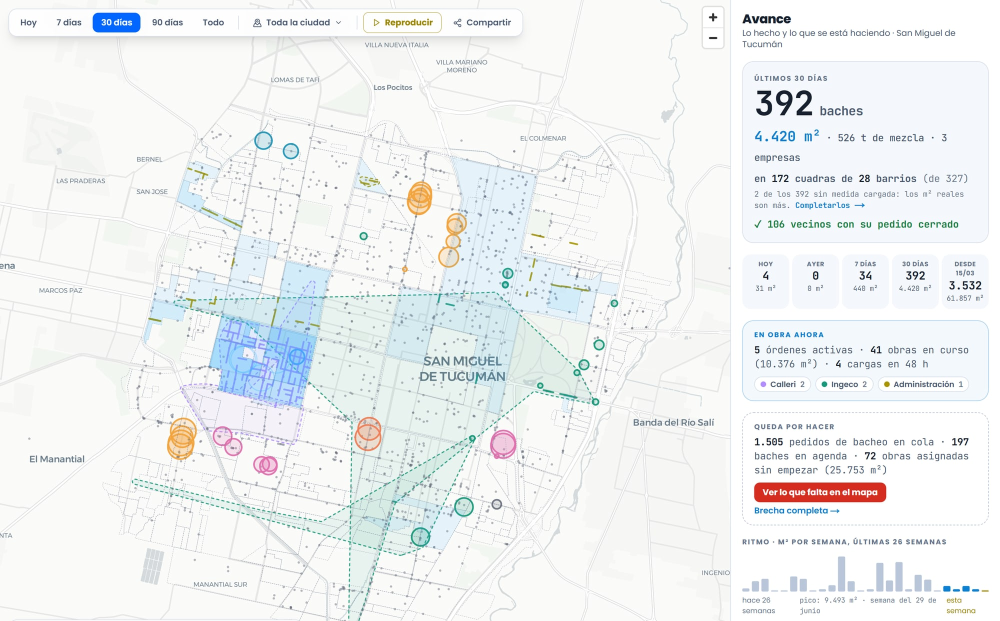

Cuadrillas y capataces
Octubre 2026
Cargar un bache desde el celular
Cada bache que tapan se carga en CIMBA con la foto, las medidas y el lugar. Con eso la Dirección ve el trabajo en el momento, lo certifica para el pago y le responde al vecino que reclamó.

La primera vez
Entrá
En el celular, abrí cimba.smt.gob.ar/empresa o escaneá el código. Entrá con el usuario de la empresa, por ejemplo calleri@cimba.com, y la clave que les dio la Dirección. La primera vez te pide elegir una clave nueva.
Mientras lo usen, no hace falta volver a entrar. Si pasa una semana sin abrirlo, pide la clave de nuevo.
Instalá la app
Al rato de entrar aparece el cartel Tené CIMBA a mano: tocá Instalar la app. Sale una sola vez.
En iPhone, tocá Compartir y después Agregar a inicio.
Queda el ícono de CIMBA en el teléfono y abre sin la barra del navegador.
Activá los avisos
Tocá Activar avisos y aceptá el permiso.
Te llega un aviso al teléfono cuando les emiten una orden nueva, cuando una orden se vence y cuando Bacheo valida o rechaza un bache que propusieron.
Los avisos llegan solo si entraste con el usuario de la empresa.
Bacheo es la Dirección que les emite las órdenes y valida los baches que proponen.
El inspector controla cada carga y arma con la empresa el acta de medición.